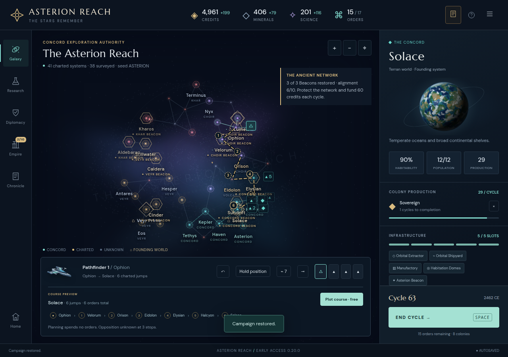
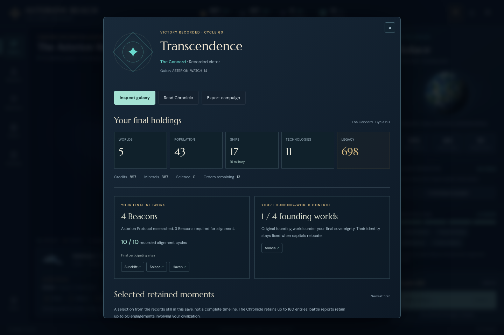

Asterion Reach · Frozen Stage20 acceptance · Save format v1
Historical saves remain playable through an ending
No product issue found. All 14 exact artifacts from the earlier compatibility audit and five explicitly selected actual IRON/WATCH exports are accepted under the integrated Stage20 engine. Six representative inputs also pass the real browser file-picker roundtrip.
19 / 19unchanged input artifacts accepted
490ordinary end-turn / exact reload pairs
16 + 3unfinished saves reach victory; completed saves remain terminal
6 / 6distinct browser import/export cases
Simulation continuations are separate from played campaign evidence.The player issues no new commands after import. Current AI and rules determine the simulated future; equality with the historical future is neither expected nor claimed. The original IRON, WATCH and Stage6 records are untouched. These related snapshots include only 16 distinct input byte hashes, so this is not a 19-game cohort or a win-rate estimate.
Import, retained data and reload
The engine is pinned to 47e037308271ff3d3ac0d1fc870a889cdf0a67c4. Validation and read-only projections run on deeply frozen copies and preserve the entire input JSON, including absent optional fields. There are no migration writes, queue repricing, invented old combat rounds or synthesized tactical data during inspection.
Across the 19 related snapshots, the inputs contain 157 paid queues, 48 trace-free battle reports, 1 saved course, 13 hold fields, 4 defense leads, 9 heritage-bearing fleets, 6 kindless peace records, 9 typed trade records and 5 trade cooldown relations. These are occurrences across snapshots, not unique historical entities. All 27 legacy over-capacity colony occurrences remain accepted.
Every ordinary end-turn is compared to a separate next turn from a fresh JSON reload, including its return value and full next state. All 999 initial/post-turn state checks pass with finite nonnegative treasury, minerals, science and orders. During continuation, 218 observations of original queue objects preserve paid cost/work, and 200 observations of retained original reports preserve the complete report JSON. Queue completion, capture, fleet losses and bounded-history pruning remain normal play. Each final state rejects another end-turn atomically.
Exact inputs and simulated endings
The earlier audit’s generated historical exports are reused byte-for-byte; this review never regenerates them. Actual selections are IRON55/57 and WATCH40/51/60. Input paths, origins and hashes are in the manifest. The ending column describes this audit’s passive simulation when steps are nonzero.
| Input | Cycles | Simulated steps | Recorded ending | Queues / reports / routes | Check |
|---|
| original-asterionexisting compatibility artifact | 30 → 59 | 29 | choir · Transcendence | 6 / 0 / 0 | PASS |
| original-legacy2existing compatibility artifact | 30 → 62 | 32 | khar · Transcendence | 5 / 0 / 0 | PASS |
| sensorsexisting compatibility artifact | 30 → 59 | 29 | choir · Transcendence | 6 / 0 / 0 | PASS |
| stage2existing compatibility artifact | 30 → 70 | 40 | veyr · Transcendence | 4 / 0 / 0 | PASS |
| stage3existing compatibility artifact | 30 → 70 | 40 | veyr · Transcendence | 4 / 0 / 0 | PASS |
| stage4existing compatibility artifact | 30 → 77 | 47 | khar · Transcendence | 9 / 0 / 0 | PASS |
| stage5existing compatibility artifact | 30 → 63 | 33 | choir · Transcendence | 9 / 0 / 0 | PASS |
| stage6existing compatibility artifact | 30 → 63 | 33 | choir · Transcendence | 9 / 0 / 0 | PASS |
| stage7existing compatibility artifact | 30 → 70 | 40 | khar · Transcendence | 10 / 0 / 0 | PASS |
| stage8existing compatibility artifact | 30 → 70 | 40 | khar · Transcendence | 10 / 0 / 0 | PASS |
| stage9existing compatibility artifact | 30 → 70 | 40 | khar · Transcendence | 10 / 0 / 0 | PASS |
| actual-stage6-cycle40existing compatibility artifact | 40 → 72 | 32 | choir · Transcendence | 15 / 0 / 0 | PASS |
| actual-stage6-route63existing compatibility artifact | 63 → 67 | 4 | player · Transcendence | 15 / 0 / 1 | PASS |
| actual-stage6-final67existing compatibility artifact | 67 → 67 | Already complete | player · Transcendence | 7 / 0 / 0 | PASS |
| actual-iron-55actual completed military campaign checkpoint | 55 → 65 | 10 | choir · Transcendence | 8 / 20 / 0 | PASS |
| actual-iron-57actual completed military campaign checkpoint | 57 → 57 | Already complete | player · Domination | 6 / 24 / 0 | PASS |
| actual-watch-40actual completed WATCH campaign checkpoint | 40 → 72 | 32 | choir · Transcendence | 9 / 0 / 0 | PASS |
| actual-watch-51actual completed WATCH campaign checkpoint | 51 → 60 | 9 | choir · Transcendence | 6 / 0 / 0 | PASS |
| actual-watch-60actual completed WATCH campaign checkpoint | 60 → 60 | Already complete | player · Transcendence | 9 / 4 / 0 | PASS |
Actual picker import and conclusion
The unchanged 0.20.0 production build at 5208 was used in fresh browser contexts. Menu → Import → choose the original file → Restore is followed by Empire, Research, Diplomacy, Chronicle and Galaxy inspection, a real exported download, and browser autosave reload. All six complete parsed states remain exactly equal to the original inputs; all page-error lists are empty. Export formatting may differ from a historical file’s whitespace, which is recorded separately from state equality.
| Input | Viewport | Ending view | Read-only checks | Result |
|---|
| original-asterion | 1440 × 960 | Unfinished campaign | Import, inspection, export, reload | PASS |
| actual-stage6-route63 | 1280 × 900 | Unfinished campaign | Import, inspection, export, reload | PASS |
| actual-stage6-final67 | 1280 × 900 | Transcendence | Import, inspection, export, reload | PASS |
| actual-iron-57 | 390 × 844 | Domination | Import, inspection, export, reload | PASS |
| actual-watch-51 | 1280 × 900 | Unfinished campaign | Import, inspection, export, reload | PASS |
| actual-watch-60 | 1440 × 960 | Transcendence | Import, inspection, export, reload | PASS |
Completed imports disable End cycle and show the recorded Domination or Transcendence conclusion. Actual IRON/WATCH retained battle links open saved participants without adding round traces. The 390px IRON case uses the visible Menu → Review this age route. The original driver’s attempt to click its hidden desktop mandate action is preserved in the initial phase; the focused follow-up passed on the same build with no product changes.

Verified Stage6 route checkpoint, preserved on import.
Actual completed WATCH save; read-only recorded conclusion.Limits and portable evidence
This finite set is targeted compatibility evidence, not proof for every possible valid save. Its legacy peace records and typed trade records are already resolved; it does not newly exercise a pending-offer expiry boundary. All 48 incoming battle reports predate round traces, so their absence is preserved; arbitrary future trace payloads are outside these input cases. Combat, treaty and save-validation unit suites remain separate evidence.
Pinned engine results and module hashes · Concise audit summary · Initial UI pass · Narrow UI follow-up · Served bundle / frozen build proof · Artifact hashes
node engine-audit.mjs --repo /path/to/repository --out /tmp/save-review
node ui-audit.mjs --repo /path/to/repository --out /tmp/save-review \
--ui-url http://matching-stage20-preview:5208
The scripts use pinned Git objects and original committed inputs. The engine pass needs Node.js and Git. The UI pass additionally needs the installed Playwright package, Chromium (--chromium overrides its path), and this matching frozen build. Outputs are written only to the specified audit folder and temporary directories. simulation-finals/ contains clearly labeled generated continuations, never replacement historical exports.
Audit completed 2026-10-29T01:40:47.571Z. Original input/provenance and production sources remain unchanged. UI assets and engine simulation pins are recorded separately.